Префектура Коти · посёлок Юсухара · архитектура
Кэнго Кума в Юсухаре: деревянный город в горах
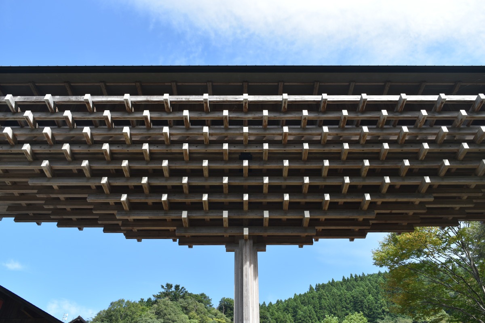
В горном посёлке Юсухара на востоке Коти стоит шесть зданий одного архитектора. Именно здесь, среди террасных полей и кедровых склонов, у Кэнго Кумы началась деревянная архитектура, которой он известен теперь во всём мире.
Кэнго Кума проектирует олимпийский стадион в Токио, станцию Таканава Гэйтвэй и музей Кадокава Мусасино. Но одним из главных своих приёмов, щедрым использованием дерева, он обязан старому театральному бараку в Юсухаре. В посёлке, где на пяти площадках собраны шесть его работ, весь город можно считать музеем. Прогулку начинают от «Маленького музея Кэнго Кумы».
Начало
Театр, который изменил его
В 1948 году, когда послевоенный лесной бум поднимал Юсухару, в посёлке построили деревянный театральный барак «Юсухара-дза». Здание в духе японо-западного эклектизма эпохи Тайсё тогда называлось «Юсухарским народным домом» и служило сценой для спектаклей, кабуки и кино.
Со временем его забросили, и дом обветшал. Одно время речь шла о сносе, но редкая для префектуры деревянная сцена и память о ней перевесили: в 1994 году здание снова назвали «Юсухара-дза», а через год перенесли на нынешнее место и восстановили.
В спасении участвовал местный архитектор. Именно он позвал своего знакомого, тогда ещё молодого Куму. Кума прежде деревянных зданий не строил, но был поражён «Юсухара-дза» и с тех пор держался дерева. Позже он говорил: «Встреча с Юсухарой изменила мою архитектуру» и «именно „Юсухара-дза“ заставил меня обратить внимание на местную древесину и на приёмы, которые передают из поколения в поколение».
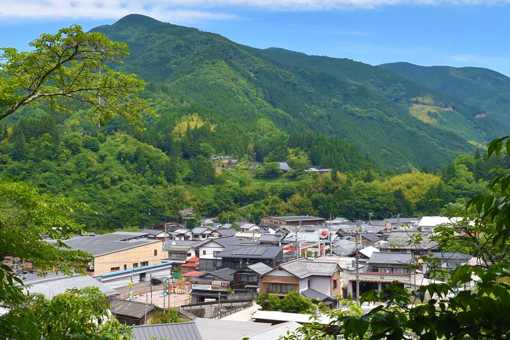
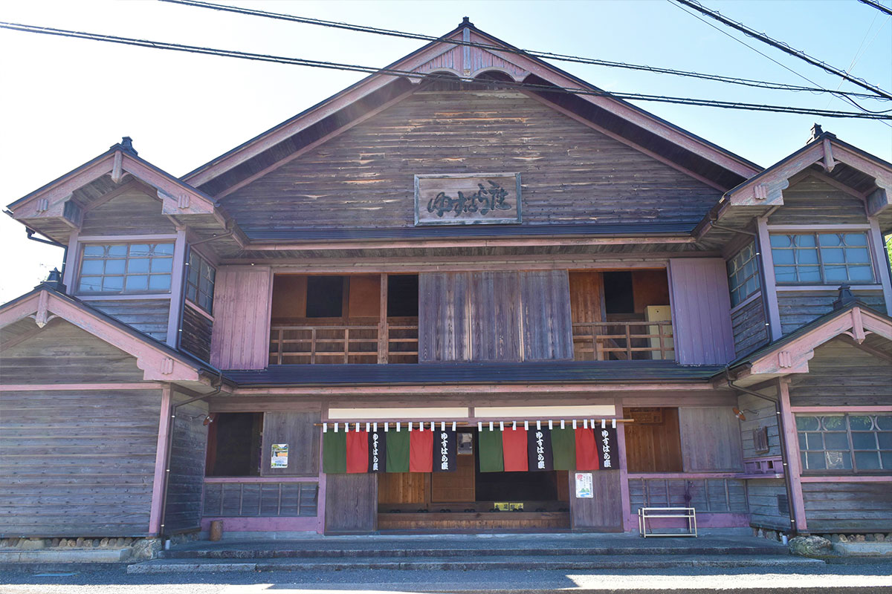
Работы
Шесть зданий Кумы
В Юсухаре Кума спроектировал отель и ресторан, галерею, библиотеку, ратушу, дорожную станцию с рынком и центр социального обслуживания.
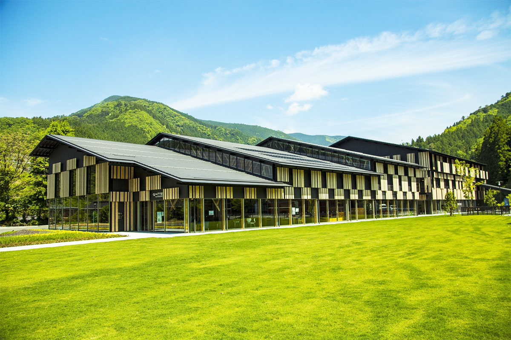
Отель и ресторан «Кумо-но уэ»
Первую работу Кумы в Юсухаре начинали как стейк-хаус, но тогдашний глава посёлка настоял на отеле и ресторане по проекту Кумы. Условием было дерево, однако по конструктивным причинам пришлось делать гибрид стали и дерева. Крыло кровли напоминает облако, а под зданием лежит полукруглый пруд, отражающий небо и звёзды: всё это придумано по образу террасных полей, которые поразили Куму при первом приезде. Внутреннюю отделку и светильники сделали из бумаги тоса-васи, которую в посёлке делает голландский мастер.
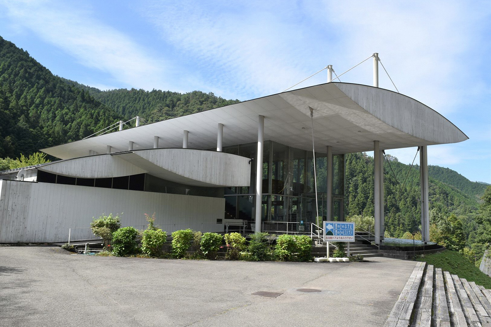
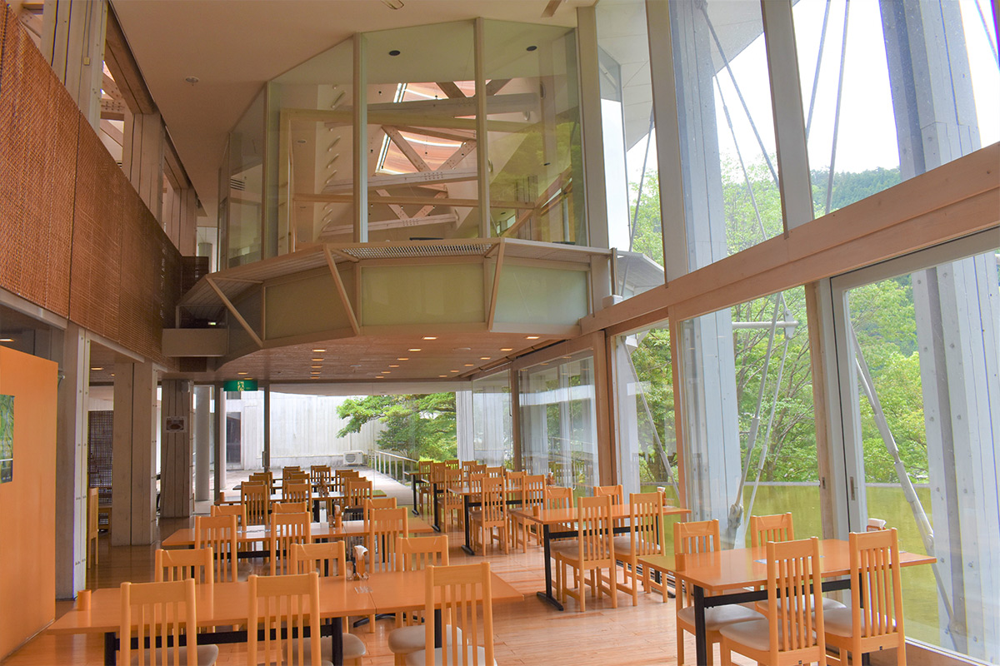
Отель и ресторан «Кумо-но уэ»
- Адрес
- префектура Коти, уезд Такаока, посёлок Юсухара, Тарогава, 3799-3
- Телефон
- +81 889-65-1100
Галерея «Кумо-но уэ»
Галерею, которую ещё называют «Музеем деревянного моста», пристроили к отелю, и она же служит тёплым переходом к источнику. Она состоит из трёх частей: перехода, галереи и моста. Самый заметный элемент, переход, повторяет токё, традиционные опоры японских карнизов, и создаёт игру света и тени. В основе лежит редкая конструкция «ханэбаси», когда балки наращивают от опор к середине; Кума назвал её «мостом в стиле ядзиробэ». Из местного кедра собрана решётка, которая держит здание над землёй.
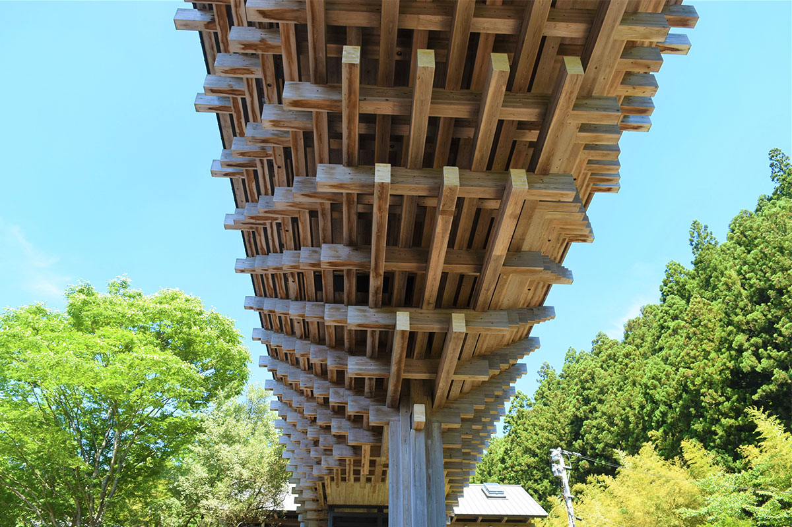
Галерея «Кумо-но уэ»
- Адрес
- префектура Коти, уезд Такаока, посёлок Юсухара, Тарогава, 3799-3
- Телефон
- +81 889-65-1187 (туристическая ассоциация Юсухары)
Библиотека «Кумо-но уэ»
Городская библиотека задумана как мост между людьми, книгами и культурой. На первом этаже общая стойка, площадка для общения и уголок для скалолазания, на втором книги и лаунж. Первое, что удивляет, здесь разуваются. В ясные дни створки окон по периметру открывают, и войти можно с любой стороны, а по деревянному полу ходят босиком, сидят и лежат с книгой где угодно. Интерьер из местного кедра и кипарисовика похож на лес с солнечными пятнами. Пол неровный: есть ступенчатые помосты по образу террасных полей и лестница-стеллаж, так что кажется, будто бродишь по лесу книг.
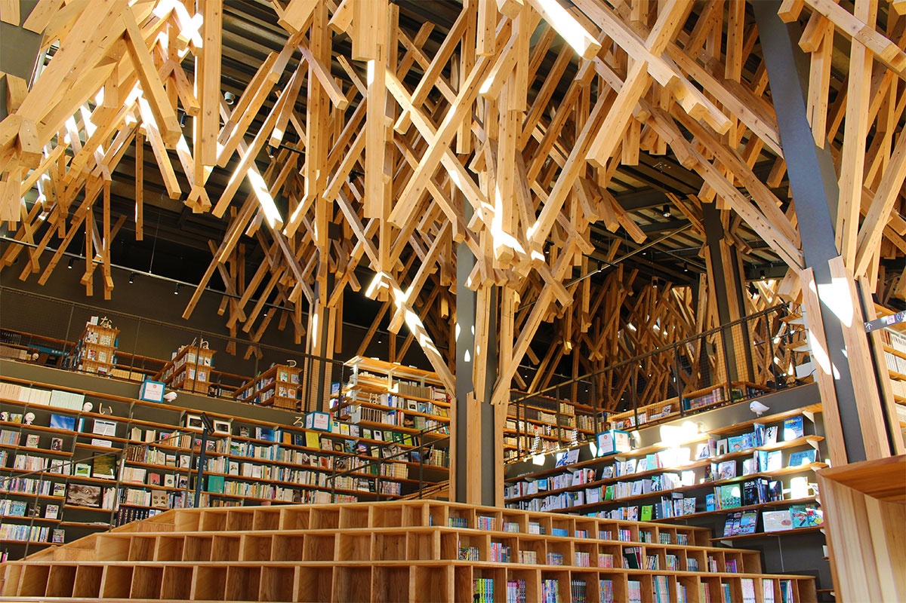
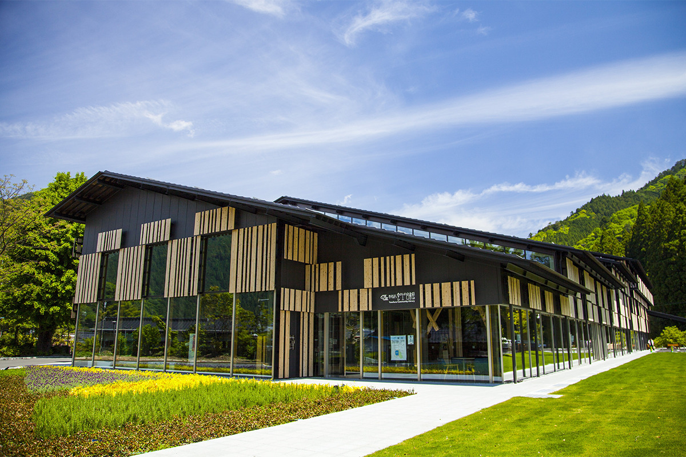
Войдя, первым видишь переплетение стволов и ветвей. Это не декор: каждая ветвь распределяет вес и делает конструкцию устойчивой к землетрясениям. «Лес Юсухары подсказал мне этот проект», говорит Кума.
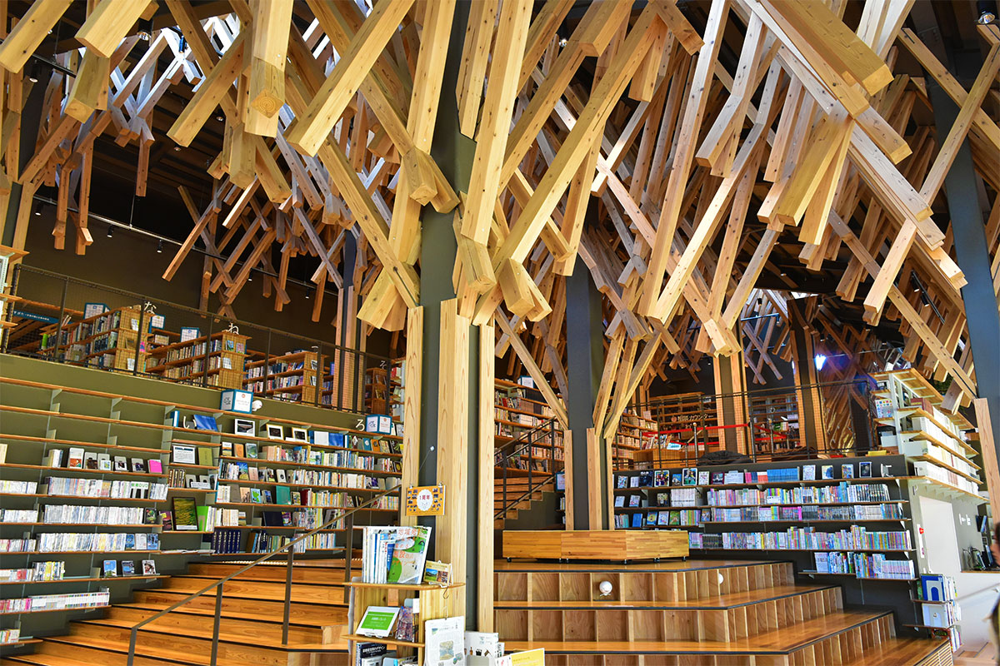
Библиотека «Кумо-но уэ»
- Адрес
- префектура Коти, уезд Такаока, посёлок Юсухара, Юсухара, 1212-2
- Телефон
- +81 889-65-1900
Ратуша посёлка
Здание ратуши 2006 года построили вместе с факультетом системного дизайна университета Кэйо, где Кума тогда преподавал. Фасад собран из ядерных панелей мозаикой, а внутри открывается атриум. Его держат четыре «составные колонны» и решётчатые «слоёные балки». Монтаж был сложным, зато смелая вязка из кедра передаёт дух «лесного посёлка Юсухара». В центре устроен «тядо», старинное место угощения, так что ратуша это не только окна выдачи документов, но и общая гостиная. Здесь же солнечные панели и естественная вентиляция: посёлок, выбранный экологической моделью, получил достойную штаб-квартиру.
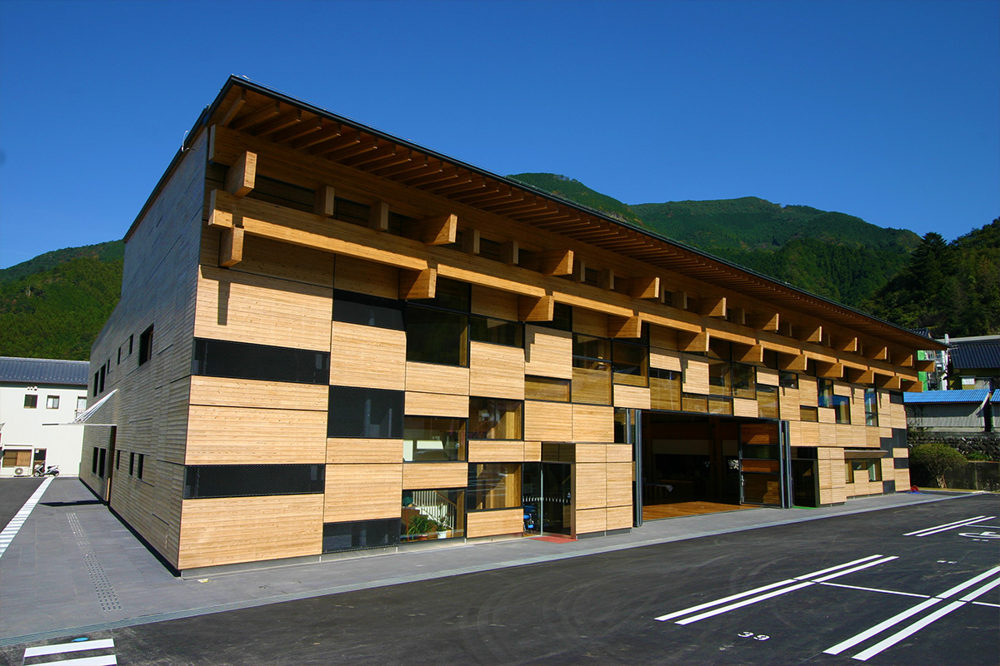
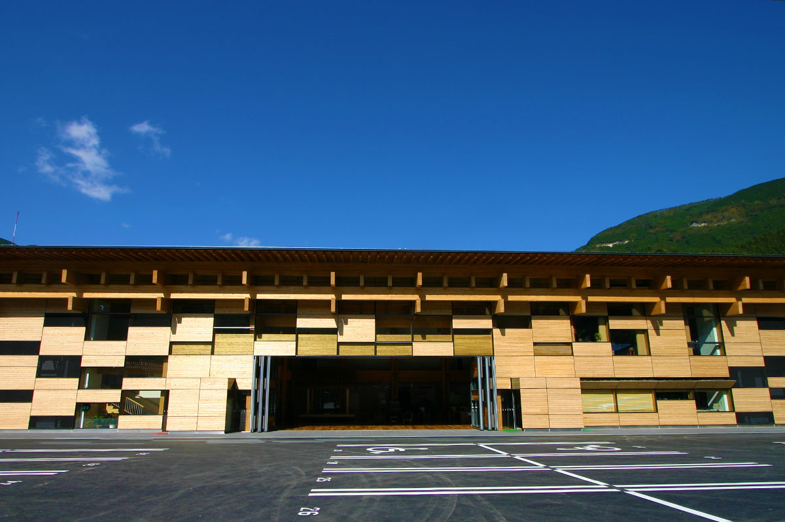
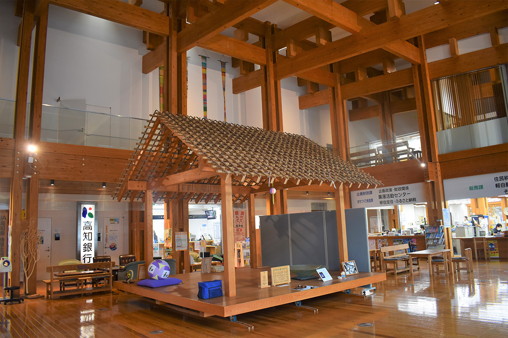
Ратуша посёлка Юсухара
- Адрес
- префектура Коти, уезд Такаока, посёлок Юсухара, Юсухара, 1444-1
- Телефон
- +81 889-65-1111
Дорожная станция «Мати-но эки Юсухара»
Её открыли в 2010 году как пристройку к отелю: первый этаж занял рынок местных продуктов, второй и третий гостиница. Главная примета, стена со стороны дороги, сплошь покрытая соломой. Это отсылка к соломенной кровле «тядо», местного места угощения. Солома не только создаёт узнаваемый облик, но и хорошо проветривается и держит тепло. Кладку выполнил местный мастер по соломе, редкая профессия в сегодняшней Японии. Внутри устроено «лесное» пространство: сквозь все три этажа поднимаются кедровые стволы-колонны, а из коридоров гостиницы видно, что происходит внутри.
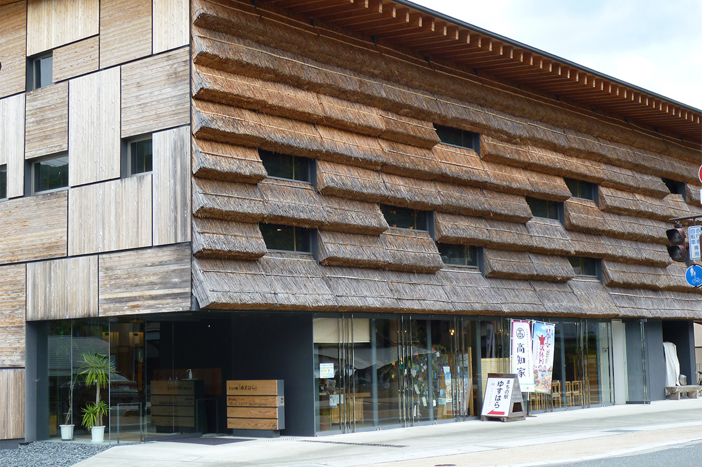
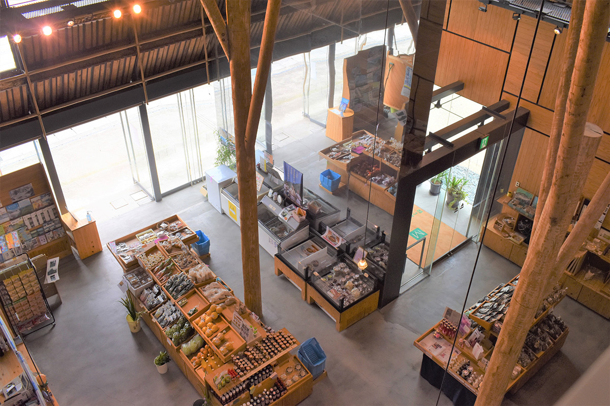
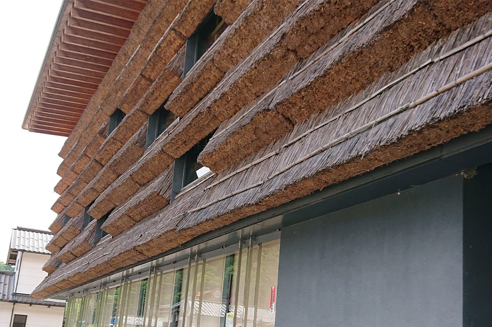
Дорожная станция «Мати-но эки Юсухара»
- Адрес
- префектура Коти, уезд Такаока, посёлок Юсухара, Юсухара, 1196-1
- Телефон
- +81 889-65-1117
Центр социального обслуживания «Юрури Юсухара»
Комплекс построили, чтобы пожилые могли спокойно жить в знакомом краю: он соединяет домашний уход и дом престарелых, а также помогает поддерживать здоровье и предупреждать болезни. Его возвели на месте старой школы, вместе с библиотекой. Крыши соседних зданий складываются в подобие горной гряды, и постройка вписывается в пейзаж. Внутри, как и в отеле, использована ручная бумага тоса-васи того же мастера и другие природные материалы; там, где дерево неуместно по гигиене, взяли отделку под дерево.
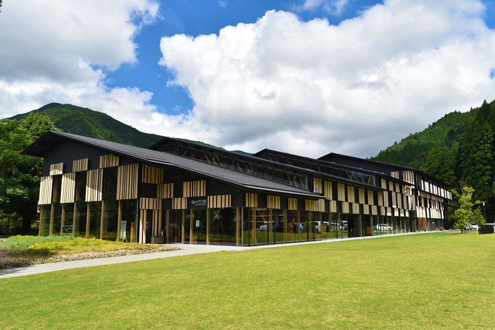
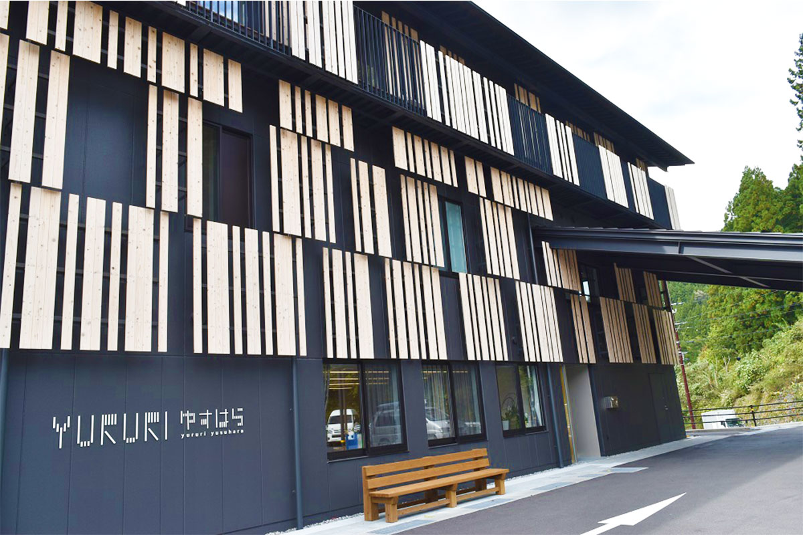
Центр «Юрури Юсухара»
- Адрес
- префектура Коти, уезд Такаока, посёлок Юсухара, Юсухара, 1212-2
- Телефон
- +81 889-65-1800
Юсухару окружает богатая природа, меняющаяся по сезонам. Стоит пройти по посёлку вслед за его постройками и за мыслью Кумы, которого эти места не отпустили до сих пор.